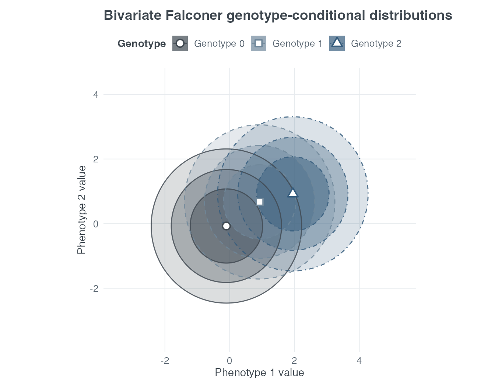
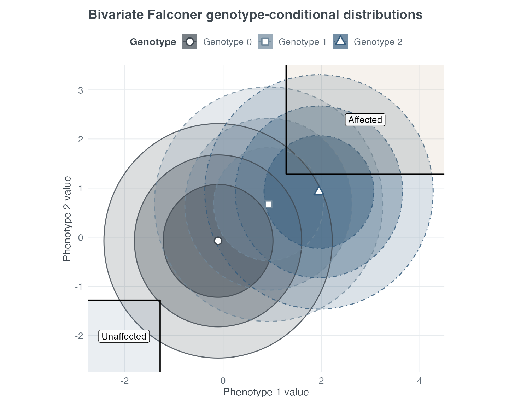

Quantitative-trait genetic association study design
paweh package authors
Source:vignettes/paweh-04-quantitative-trait-study-design.Rmd
paweh-04-quantitative-trait-study-design.RmdQuantitative-trait study design in PAWEH
For a quantitative trait, genotype can shift the phenotype
distribution rather than simply changing a binary disease probability.
paweh uses a Falconer-style model to calculate prospective
operating characteristics for association-study design. Its core inputs
are:
-
qtl_var: the proportion of trait variance attributable to the modeled QTL; -
tau: dominance relative to additivity; -
pd: the frequency of the modeled allele; and - residual variance or covariance: the remaining phenotype variation and, for multiple traits, how those traits co-vary.
These functions plan studies under a specified model. They do not estimate QTL effects from individual-level phenotype and genotype observations.
Genotype-specific trait distributions
The three genotype groups can have different expected trait distributions, but residual variation makes those distributions overlap. Greater separation of the genotype means generally creates a stronger potential association signal.
plot_qtl_genotype_distribution(
qtl_var = 0.25,
tau = 0.25,
pd = 0.25,
type = "binned",
scale = "density"
)
Deterministic genotype-specific quantitative-trait distributions under the Falconer model.
Vertical lines identify the genotype-specific means.
type = "binned" is a deterministic histogram-style
representation: each bar is calculated from the difference between
analytic Normal CDF values at its bin boundaries. No random observations
are simulated.
Continuous-trait ANOVA design
When every recruited subject is measured on the continuous trait, a one-way ANOVA can compare the three genotype groups. The following example calculates power at a fixed sample size and the minimum total sample size (MSSN) for 80% power.
anova_power <- qtl_anova_power(
N = 996, alpha = 0.0001,
qtl_var = 0.025, tau = 0.5, pd = 0.15,
count_method = "rounded", verbose = FALSE
)
anova_mssn <- qtl_anova_mssn(
power = 0.80, alpha = 0.0001,
qtl_var = 0.025, tau = 0.5, pd = 0.15,
count_method = "rounded", multiple_of_three = TRUE,
verbose = FALSE
)
data.frame(
quantity = c("Power at N = 996", "Required total N", "Power at required N"),
value = c(anova_power$power, anova_mssn$N, anova_mssn$achieved_power)
)
#> quantity value
#> 1 Power at N = 996 0.8000478
#> 2 Required total N 996.0000000
#> 3 Power at required N 0.8000478One power curve summarizes how the design changes as more participants are measured.
plot_qtl_anova_power(
x_var = "N",
x_values = seq(300, 1200, by = 150),
alpha = 0.0001,
qtl_var = 0.025,
tau = 0.5,
pd = 0.15
)
One-way genotype-group ANOVA power as total sample size increases.
Extreme-phenotype sampling
Instead of recruiting across the full phenotype distribution,
investigators may select subjects from its extremes. In
paweh’s single-trait threshold design, upper-tail
individuals become selected cases, lower-tail individuals become
selected controls, and individuals in the middle are not selected. Upper
and lower events are distinct tails rather than complements.
Li et al. (2019) provide a motivating published
application of extreme quantitative-phenotype sampling. Their
procedure is not the threshold-selected genotype chi-square method
implemented by paweh, so this is motivation rather than a
numerical reproduction.
threshold_model <- qtl_falconer_threshold_parameters(
qtl_var = 0.025, tau = 0.5, pd = 0.15,
x_upper = 5, x_lower = 5,
verbose = FALSE
)
threshold_power <- qtl_threshold_chisq_power(
N_case = 126, alpha = 0.0001,
qtl_var = 0.025, tau = 0.5, pd = 0.15,
x_upper = 5, x_lower = 5, k = 1,
verbose = FALSE
)
threshold_mssn <- qtl_threshold_chisq_mssn(
power = 0.80, alpha = 0.0001,
qtl_var = 0.025, tau = 0.5, pd = 0.15,
x_upper = 5, x_lower = 5, k = 1,
verbose = FALSE
)
data.frame(
quantity = c(
"Upper threshold", "Lower threshold", "Power with 126 selected cases",
"Required selected cases", "Required selected controls",
"Expected source population screened for cases",
"Expected source population screened for controls"
),
value = c(
threshold_model$upper_threshold,
threshold_model$lower_threshold,
threshold_power$power,
threshold_mssn$N_case,
threshold_mssn$N_control,
threshold_mssn$expected_population_screened_cases,
threshold_mssn$expected_population_screened_controls
)
)
#> quantity value
#> 1 Upper threshold 1.6448536
#> 2 Lower threshold -1.6448536
#> 3 Power with 126 selected cases 0.8016659
#> 4 Required selected cases 126.0000000
#> 5 Required selected controls 126.0000000
#> 6 Expected source population screened for cases 2513.7381119
#> 7 Expected source population screened for controls 2526.1897442The selected study MSSN and the expected source population screened are different quantities. Screening burden can be much larger because only a fraction of the source population falls into either selected tail.
plot_qtl_threshold_chisq_mssn(
x_var = "x_upper",
x_values = c(2.5, 5, 7.5, 10, 15),
sample_size = "case",
power = 0.80,
alpha = 0.0001,
qtl_var = 0.025,
tau = 0.5,
pd = 0.15,
x_lower = 5,
k = 1,
title = "Required cases vs upper-tail selection"
)
Required selected cases as upper-tail sampling becomes less extreme, with the lower tail fixed at 5%.
Selection stringency changes genotype enrichment, selected-sample MSSN, and the operational burden of finding eligible participants.
Multiple quantitative traits
Multiple correlated or biologically related phenotypes may carry
complementary information about the same locus. Yang et al. (2010)
provide a motivating published application of joint
phenotype analysis, but their method is not the Pillai framework
implemented by paweh and is not reproduced here.
For multivariate paweh designs, qtl_var and
tau become phenotype-specific vectors, pd
remains shared, and cor_matrix describes phenotype
correlation. Use test = "pillai" for a continuous
multivariate design or test = "threshold_chisq" for jointly
threshold-selected phenotypes.
Published-example reproduction: Gordon et al. (2017)
The published pleiotropic example uses allele frequency 0.05, QTL
variances 0.10 and 0.05, dominance ratios 0 and 0.50, independent
phenotypes, target power 0.80, and genome-wide
alpha = 5e-8.
gordon_mv <- qtl_multivariate_mssn_full(
power = 0.80,
alpha = 5e-8,
qtl_var = c(0.10, 0.05),
tau = c(0, 0.50),
pd = 0.05,
cor_matrix = diag(2),
test = "pillai",
verbose = FALSE
)
stopifnot(gordon_mv$N == 326L)
data.frame(
quantity = c(
"Published integer MSSN",
"paweh integer MSSN",
"Historical fractional MSSN"
),
value = c(326, gordon_mv$N, gordon_mv$historical_fractional_mssn)
)
#> quantity value
#> 1 Published integer MSSN 326.0000
#> 2 paweh integer MSSN 326.0000
#> 3 Historical fractional MSSN 325.5057The published result and paweh both require 326
participants. The historical continuous root is approximately 325.5057;
recruitment requires an integer, so the result is rounded upward.
The inverse calculation evaluates power at the returned integer design using the same model.
gordon_mv_power <- qtl_multivariate_power_full(
N = gordon_mv$N,
alpha = 5e-8,
qtl_var = c(0.10, 0.05),
tau = c(0, 0.50),
pd = 0.05,
cor_matrix = diag(2),
test = "pillai",
verbose = FALSE
)
gordon_mv_power$power
#> [1] 0.8014862Three genotype-specific multivariate distributions
The same Gordon parameters define one conditional bivariate phenotype distribution for each genotype, . The filled regions below show the 50%, 80%, and 95% nested conditional probability regions. The darkest inner region contains the first 50%, the middle band extends coverage to 80%, and the lightest outer band extends coverage to 95%.
plot_qtl_multivariate_contour(
qtl_var = c(0.10, 0.05),
tau = c(0, 0.50),
pd = 0.05,
cor_matrix = diag(2),
surface = "genotype_density",
component_probs = c(0.50, 0.80, 0.95)
)
Genotype-specific bivariate phenotype distributions for the Gordon et al. model. Nested regions represent 50%, 80%, and 95% conditional probability regions.
These components are deliberately not multiplied by
Hardy–Weinberg genotype frequencies. Each conditional distribution
remains fully visible, including the rare genotype. This view explains
the three distributions in the model, analogous to a flat projection of
three density hills. By contrast, surface = "density"
displays the true genotype-frequency-weighted population mixture.
Joint multivariate threshold selection
For test = "threshold_chisq", affected subjects must
satisfy both upper-tail conditions, and unaffected subjects must satisfy
both lower-tail conditions:
The next plot overlays that selection geometry on the three conditional component distributions. The 10% thresholds illustrate the design and are not part of the published Gordon reproduction.
plot_qtl_multivariate_contour(
qtl_var = c(0.10, 0.05),
tau = c(0, 0.50),
pd = 0.05,
cor_matrix = diag(2),
x_upper = c(10, 10),
x_lower = c(10, 10),
surface = "genotype_density",
component_probs = c(0.50, 0.80, 0.95),
show_thresholds = TRUE,
xlim = c(-2.75, 4.50),
ylim = c(-2.75, 3.50)
)
Genotype-specific bivariate distributions with joint upper-tail affected and lower-tail unaffected selection regions.
Subjects in mixed or middle regions are unselected. This figure combines the unweighted genotype-specific phenotype distributions with selection geometry; it is not a genotype-frequency-weighted population mixture.
Scope and limitations
Joint multivariate tail probabilities use deterministic Miwa integration through 20 dimensions and locally seeded Genz–Bretz integration above 20. The latter restores the caller’s random-number state and retains integration status information.
Important scope boundaries are:
- calculations are prospective study-design calculations, not model fitting;
- genotype-specific phenotypes follow the modeled normal assumptions;
- residual variance and covariance determine distributional overlap;
- single-trait threshold designs exclude the middle of the distribution;
- multivariate threshold selection uses joint AND semantics;
- subjects in mixed or middle multivariate regions are unselected;
- a multivariate trend test is not implemented; and
- plots visualize the design model rather than observed participant-level data.
References
Genz A, Bretz F. Computation of Multivariate Normal and t Probabilities. Springer; 2009. https://doi.org/10.1007/978-3-642-01689-9.
Gordon D, Londono D, Patel P, Kim W, Finch SJ, Heiman GA. An analytic solution to computation of power and sample size for genetic association studies under a pleiotropic mode of inheritance. Human Heredity. 2017;81(4):194–209. https://doi.org/10.1159/000457135.
Li Y, Levran O, Kim J, Zhang T, Chen X, Suo C. Extreme sampling design in genetic association mapping of quantitative trait loci using balanced and unbalanced case-control samples. Scientific Reports. 2019;9:15504. https://doi.org/10.1038/s41598-019-51790-w.
Pillai KCS. Some new test criteria in multivariate analysis. Annals of Mathematical Statistics. 1955;26(1):117–121. https://doi.org/10.1214/aoms/1177728599.
Yang Q, Wu H, Guo C. Analyze multivariate phenotypes in genetic association studies by combining univariate association tests. Genetic Epidemiology. 2010;34(5):444–454. https://doi.org/10.1002/gepi.20497.
Session information
sessionInfo()
#> R version 4.6.1 (2026-06-24)
#> Platform: aarch64-apple-darwin23
#> Running under: macOS Tahoe 26.6.2
#>
#> Matrix products: default
#> BLAS: /Library/Frameworks/R.framework/Versions/4.6/Resources/lib/libRblas.0.dylib
#> LAPACK: /Library/Frameworks/R.framework/Versions/4.6/Resources/lib/libRlapack.dylib; LAPACK version 3.12.1
#>
#> locale:
#> [1] C.UTF-8/C.UTF-8/C.UTF-8/C/C.UTF-8/C.UTF-8
#>
#> time zone: America/New_York
#> tzcode source: internal
#>
#> attached base packages:
#> [1] stats graphics grDevices utils datasets methods base
#>
#> other attached packages:
#> [1] paweh_0.99.0 BiocStyle_2.40.0
#>
#> loaded via a namespace (and not attached):
#> [1] gtable_0.3.6 jsonlite_2.0.0 dplyr_1.2.1
#> [4] compiler_4.6.1 BiocManager_1.30.27 tidyselect_1.2.1
#> [7] dichromat_2.0-1 jquerylib_0.1.4 systemfonts_1.3.2
#> [10] scales_1.4.0 textshaping_1.0.5 yaml_2.3.12
#> [13] fastmap_1.2.0 ggplot2_4.0.3 R6_2.6.1
#> [16] labeling_0.4.3 generics_0.1.4 knitr_1.51
#> [19] htmlwidgets_1.6.4 tibble_3.3.1 bookdown_0.47
#> [22] desc_1.4.3 bslib_0.12.0 pillar_1.11.1
#> [25] RColorBrewer_1.1-3 rlang_1.3.0 cachem_1.1.0
#> [28] xfun_0.60 fs_2.1.0 sass_0.4.10
#> [31] S7_0.2.2 otel_0.2.0 cli_3.6.6
#> [34] withr_3.0.3 pkgdown_2.2.1 magrittr_2.0.5
#> [37] digest_0.6.39 grid_4.6.1 mvtnorm_1.4-2
#> [40] lifecycle_1.0.5 vctrs_0.7.3 evaluate_1.0.5
#> [43] glue_1.8.1 farver_2.1.2 ragg_1.5.2
#> [46] rmarkdown_2.31 pkgconfig_2.0.3 tools_4.6.1
#> [49] htmltools_0.5.9